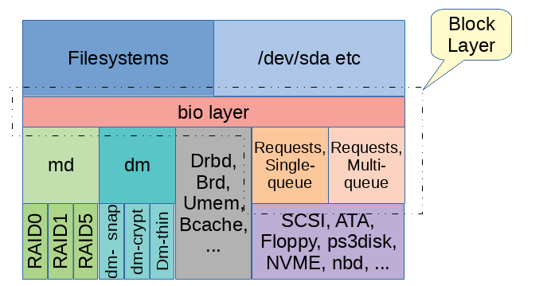

By Neil Brown October 25, 2017, lwn.net
- A block layer introduction part 1: the bio layer
- [PATCH] block: replace bi_bdev with a gendisk pointer and partitions index
- [PATCH] blk: improve order of bio handling in generic_make_request()
- [PATCH] block: initial patch for on-stack per-task plugging
- [PATCH] block: provide a direct_make_request helper
One of the key values provided by an operating system like Linux is that it provides abstract interfaces to concrete devices. Though the original "character device" and "block device" abstractions have been supplemented with various others including "network device" and "bitmap display", the original two have not lost their importance. The block device interface, in particular, is still central to managing persistent storage and, even with the growth of persistent memory, this central role is likely to remain for some time. Unpacking and explaining some of that role is the goal of this pair of articles.
The term "block layer" is often used to talk about that part of the Linux kernel which implements the interface that applications and filesystems use to access various storage devices. Exactly which code constitutes this layer is a question that reasonable people could disagree on. The simplest answer is that it is all the code inside the block subdirectory of the Linux kernel source. This collection of code can be seen as providing two layers rather than just one; they are closely related but clearly distinct. I know of no generally agreed names for these sub-layers and so choose to call them the "bio layer" and the "request layer". The remainder of this article will take us down into the former while the latter will be left for a subsequent article.
Above the block layer
Before digging into the bio layer it will be useful to provide context by describing the parts of Linux that sit just above the block layer. "Above" in this sense means closer to user-space (the top) and further from hardware (the bottom) — it covers the clients that might use the services provided by the block layer and below.

Access to block devices generally happens through block special devices in /dev, which map to S_IFBLK inodes in the kernel. These inodes act a little bit like symbolic links in that they don't represent the block device directly but simply contain a pointer to the block device as a "major:minor" number pair. Internally the i_bdev field in the inode contains a link to a struct block_device that represents the target device. This block device holds a reference to a second inode: block_device->bd_inode. This inode is more closely involved in I/O to the block device, the original inode in /dev is just a pointer.
The main role that this second inode plays (which is implemented in fs/block_dev.c, fs/buffer.c, and elsewhere) is to provide a page cache. When the device file is opened without the O_DIRECT flag, the page cache associated with the inode is used to buffer reads, including readahead, and to buffer writes, usually delaying writes until the normal writeback process flushes them out. When O_DIRECT is used, reads and writes go directly to the block device. Similarly when a filesystem mounts a block device, reads and writes from the filesystem usually go directly to the device, though some filesystems (particularly the ext* family) can access the same page cache (traditionally known as the buffer cache in this context) to manage some of the filesystem data.
Another open() flag of particular relevance to block devices is O_EXCL. Block devices have a simple advisory-locking scheme whereby each block device can have at most one "holder". The holder is specified when activating the block device (e.g. using a blkdev_get() or similar call in the kernel); that will fail if a different holder has already claimed the device. Filesystems usually specify a holder when mounting a device to ensure exclusive access. When an application opens a block device with O_EXCL, that causes the newly created struct file to be used as the holder; the open will fail if a filesystem is mounted from the device. If the open is successful, it will block future mount attempts as long as the device remains open. Using O_EXCL doesn't prevent the block device from being opened without O_EXCL, so it doesn't prevent concurrent writes completely — it just makes it easy for applications to test if the block device is in use.
Whichever way a block device is accessed, the primary interface involves sending read or write requests, or various other requests such as discard, and eventually getting a reply. This interface is provided by the bio layer.
The bio layer
All block devices in Linux are represented by struct gendisk — a "generic disk". This structure doesn't contain a great deal of information and largely serves as a link between the filesystem interface "above" and the lower-layer interface "below". Above the gendisk is one or more struct block_device, which, as we already saw, are linked from inodes in /dev. A gendisk can be associated with multiple block_device structures when it has a partition table. There will be one block_device that represents the whole gendisk, and possibly some others that represent partitions within the gendisk. 一个分区一个 block_device，整个 gendisk 一个 block_device
The "bio" that gives its name to the bio layer is a data structure (struct bio) that carries read and write requests, and assorted other control requests, from the block_device, past the gendisk, and on to the driver. A bio identifies a target device, an offset in the linear address space of the device, a request (typically READ or WRITE), a size, and some memory where data will be copied to or from. Prior to Linux 4.14, the target device would be identified in the bio by a pointer to the struct block_device. Since then it holds a pointer to the struct gendisk together with a partition number, which can be set by bio_set_dev(). This is more natural given the central role of the gendisk structure.
Once constructed, a bio is given to the bio layer by calling generic_make_request() or, equivalently, submit_bio(). This does not normally wait for the request to complete, but merely queues it for subsequent handling. generic_make_request() can still block for short periods of time, to wait for memory to become available, for example. A useful way to think about this behavior is that it might wait for previous requests to complete (e.g. to make room on the queue), but not for the new request to complete If the REQ_NOWAIT flag is set in the bi_opf field, generic_make_request() shouldn't wait at all if there is insufficient space and should, instead, cause the bio to complete with the status set to BLK_STS_AGAIN, or possibly BLK_STS_NOTSUPP. As of this writing, this feature is not yet implemented correctly or consistently.
The interface between the bio layer and request layer requires devices to register with the bio layer by calling blk_queue_make_request() and passing a make_request_fn() function that takes a bio. generic_make_request() will call that function for the device identified in the bio. This function must arrange things such that, when the I/O request described by the bio completes, the bi_status field is set to indicate success or failure and call bio_endio() which, in turn, will call the bi_end_io() function stored in the structure.
The two most interesting features of the bio layer, beyond the simple handling of bio requests already described, are the recursion avoidance and the queue plugging.
Recursion avoidance
It is quite possible for the use of virtual block devices such as "md" (used for software RAID) and "dm" (used, for example, by LVM2) to result in a stack of block devices, each of which modifies a bio and sends it on to the next device in the stack. A simple implementation of this would cause a large stack of devices to result in excessive use of the kernel's call stack. In the distant past (before Linux 2.6.22) this would sometimes cause problems, particularly when the bio was submitted by a filesystem that was already using a considerable amount of the stack.
Instead of allowing this recursion, generic_make_request() detects when it is being called recursively and does not pass the bio down to the next layer. Instead it queues the bio internally (using current->bio_list in the struct task_struct for the current process) and submits it only after the parent bio submission completes. As generic_make_request() is not expected to wait for the bio to complete, it is normally safe to not even start processing immediately.
This recursion avoidance often works perfectly, but it sometimes leads to deadlocks. The key to understanding these deadlocks is the observation made above that submission of a bio (i.e. the make_request_fn() called by generic_make_request()) is permitted to wait for previously submitted bios to complete. If it waits for a bio that is still on the current->bio_list queue managed by generic_make_request(), then it will wait forever.
The dependencies that cause one bio to wait for an earlier one are often subtle and usually found through testing rather than code inspection. A simple example involves the occasional need to split a bio using a mempool. If a bio is submitted to a device that has limits on the size or alignment of I/O requests, the make_request_fn() might choose to split the bio into two parts which are handled separately. The bio layer provides functions (bio_split() and bio_chain()) that make this quite easy to do, but the operation requires that a second bio structure be allocated. Allocating memory must be done cautiously in the block layer since, when there is a shortage of free memory, a key strategy used by Linux is to write out dirty pages, through the block layer, so they can then be discarded. If that write-out needs to wait for memory to be allocated, it can cause problems. A standard mechanism is to use a mempool, which pre-allocates a small amount of memory for a specific purpose. Allocating from a mempool may wait for previous users of the mempool to return the memory they used, but will not wait for general memory reclaim to finish. When a mempool is used to allocate bios, this waiting can introduce the sort of dependency that can cause generic_make_request() to deadlock. 死锁举例
There have been several attempts to provide an easy way to avoid these deadlocks. One is embodied in the "bioset" processes that you might see in a ps listing. This mechanism focuses specifically on the deadlock scenario described above and allocates a "rescuer" thread for each mempool used for allocating bio structures. If an allocation attempt cannot be easily satisfied, any bios from the same bioset that are in the current->bio_list queue are handed to the bioset thread for processing. This approach is fairly heavy-handed, resulting in the creation of many threads that are almost never used, and only addresses one particular deadlock scenario 不是通用的解决方法. Most, if not all, deadlock scenarios involve splitting bios into two or more parts, but they don't always involve waiting on mempool allocation.
Recent kernels only depend on this for a few isolated cases and generally avoid creating the bioset thread when it isn't needed. Instead, an alternate approach, which was introduced by changes to generic_make_request() in Linux 4.11, is used. It is more general and imposes less overhead on a running system, but instead places requirements on how drivers are written 有得有失.
The main requirement is that when a bio is split, one of the halves should be submitted directly to generic_make_request() so that it can be handled at the most appropriate time. The other half may be processed in whatever way is appropriate. This gives generic_make_request() a little more control over what happens. It makes use of this control by sorting all the bios based on how deep in the device stack they were submitted. It then always handles bios destined for lower devices before upper devices. This simple expedient removes all the annoying deadlocks.
Device queue plugging
Storage devices often have significant per-request overheads, so it can be more efficient to gather a batch of requests together and submit them as a unit. When the device is relatively slow it will often have a large queue of pending requests and that queue provides plenty of opportunity for identifying suitable batches. When a device is quite fast, or when a slow device is idle, there is less opportunity to find batches naturally. To address this challenge, the Linux block layer has a concept called "plugging".
Originally, plugging applied only to an empty queue. Before submitting a request to an empty queue, the queue would be plugged so that no requests could flow through to the underlying device for a while. Bios submitted by the filesystem could then queue up and allow batches to be identified. The queue would be unplugged explicitly by the filesystem requesting it, or implicitly after a short timeout. It is hoped that by this time some suitable batches would have been found and that the small delay in starting work is more than compensated for by the larger batches that are ultimately submitted. Since Linux 2.6.39 a new plugging mechanism has been in place that works on a per-process basis rather than per-device 进程级别的 plug. This scales better on multi-CPU machines.
When a filesystem or other client of a block device submits requests it will normally bracket a collection of generic_make_request() calls with blk_start_plug() and blk_finish_plug(). This sets up current->plug to point to a data structure that can contain a list of struct blk_plug_cb (and also a list of struct request that we find out more about in the next article). As these lists are per-process, entries can be added without any locking. The make_request_fn that is given individual bios can choose to add the bio to a list in the plug if that might allow it to work more efficiently.
When blk_finish_plug() is called, or whenever the process calls schedule() (such as when waiting for a mutex, or when waiting for memory allocation), each entry stored in current->plug is processed. This processing will complete everything that the driver would have done if it had not decided to add the bio to the plug list, or if no plug has been enabled.
The fact that the plug is processed from schedule() calls means that bios are only delayed while new bios are being produced. If the process blocks to wait for anything, the list assembled so far is processed immediately. 避免进程等待过长 This protects against the possibility that the process might be waiting for a bio that has already been submitted, but is currently queued behind the plug.
优点 Performing the plugging at the process level like this maintains the benefit that batches of related bios are easy to detect and keep together, and adds the benefit that locking can be reduced. Without this per-process plugging a spinlock, or at least an atomic memory operation, would be needed to handle every individual bio. With per-process plugging, it is often possible to create a per-process list of bios, and then take the spinlock just once to merge them all into the common queue.
Bio and below
In summary, the bio layer is a thin layer that takes I/O requests in the form of bio structures and passes them directly to the appropriate make_request_fn() function. It provides various support functions to simplify splitting bios and scheduling the sub-bios, and to allow plugging of the queue. It also performs some other simple tasks such as updating the pgpgin and pgpgout statistics in /proc/vmstat, but mostly it just lets the next level down get on with its work.
Sometimes the next layer is just the final driver, as with drbd (The Distributed Replicated Block Device) or brd (a RAM based block device). More often the next layer is an intermediate layer such as for the virtual devices provided by md and dm. Probably the most common is when that intermediate layer is the remainder of the block layer, which I have chosen to call the "request layer". Some of the intricacies of this layer will be the topic of the second part of this overview.
comment
Posted Oct 25, 2017 10:42 UTC (Wed) by javigon
On recursion avoidance, would be relevant to mention direct_make_request, which is being pushed by Christoph ("block: provide a direct_make_request helper").
Posted Oct 25, 2017 19:12 UTC (Wed) by edos
I didn't get completely about deadlock in the article. How is that possible when we have stacked block devices to produce a deadlock based on interdependency? It is not clear for me still
Posted Oct 25, 2017 21:34 UTC (Wed) by neilbrown
A simple, though extremely unlikely, scenario that could cause a deadlock is:
- Suppose I have a RAID1 array where each of the member devices is a RAID0 array with a 4K chunk size. - An 8K write BIO arrives for the RAID1 array. raid1 code allocates two bios from a private pool and sends an 8K bio to each of the RAID0 devices. These two bios gets queued by generic_make_request. - Then generic_make_request starts processing the first RAID0 bio. raid0 code needs to split it into 2 4K bios and so allocates a bio from a private pool and submits the new bio and the old bio (now reduced in size) to the underlying devices. These two bios get queued by generic_make_request. - Then generic_make_request starts processing the second RAID0 bio (newer code will have sorted this to the end of the list, to help avoid the deadlock). Again raid0 code needs to split the bio.
Now, suppose there is no free memory, suppose the private mempool has 16 preallocated entries, and suppose 16 threads all perform exactly this 8K write submission (to different addresses in the RAID1) at the same time.
We will end up with 16 threads all trying to allocate a second bio from the same private pool, while the 16 preallocated entries are each trapped, one per thread, in the generic_make_request queue. The allocations will wait for a previously allocated bio to complete, and those previous bios won't be processed by generic_make_request() until after the allocation completes.
There are other scenarios that are more complex, but are likely enough to actually happen in practice.
Posted Oct 26, 2017 6:04 UTC (Thu) by Cyberax
I'm confused. Can the abovementioned scenario deadlock with the current bio layer?
Posted Oct 27, 2017 2:01 UTC (Fri) by neilbrown
No, hence the parenthetical comment (newer code will have sorted this to the end of the list, to help avoid the deadlock). Providing drivers which split bios only process one of them and submit the other directly to generic_make_request(), there should be no deadlock (of this sort).
Posted Oct 27, 2017 10:18 UTC (Fri) by amarao
I somehow dislike current block level in Linux.
Many years ago I found an easily reproducible bug within linux kernel. It requires just a two SATA drives pugged together into SAS enclosure and connected to LSI HBA (Pretty common configuration for many servers).
I found that a very simple shell script (3 lines, literally) can cause whole enclosure of disks to become unresponsive. This script is available here: https://github.com/amarao/lsi-sata-fuckup
I reported it to upstream bugzilla (https://bugzilla.kernel.org/show_bug.cgi?id=98121 for some other special case), I reported it to LSI. No fixes or reaction insofar (5 years!).
One may think that this is 'one driver issue'. May be. But I found that other parts of kernel handle this situation really badly. If one device become 'dead' (unresponsive), any process accessing it falls into 'D' state (TASK_UNINTERRUPTIBLE) and it couldn't be terminated (even with kill -9) until server reboot. Moreover, it couldn't be even 'Ctrl-Z' or SIGSTOP'ed, locking console forever.
Why? Why no one care about such grossly inadequate behavior?
Posted Oct 30, 2017 15:19 UTC (Mon) by willy
>> If one device become 'dead' (unresponsive), any process accessing it falls into 'D' state (TASK_UNINTERRUPTIBLE) and it couldn't be terminated (even with kill -9) until server reboot. Moreover, it couldn't be even 'Ctrl-Z' or SIGSTOP'ed, locking console forever.
This is heritage from traditional Unix. About 10 years ago, Linux added a new state -- TASK_KILLABLE. Of course, it takes a long time to go through and change all the UNINTERRUPTIBLE sleeps into KILLABLE sleeps. Every time you want to do that, you need to add error handling and back out of the operation appropriately. It's really hard. It requires a lot of knowledge of the code you're changing and a lot of thinking about what might have gone wrong in order for this operation to have failed and what the appropriate response is. Some people have done sterling work to make tasks more killable, but the work will probably never be completed.